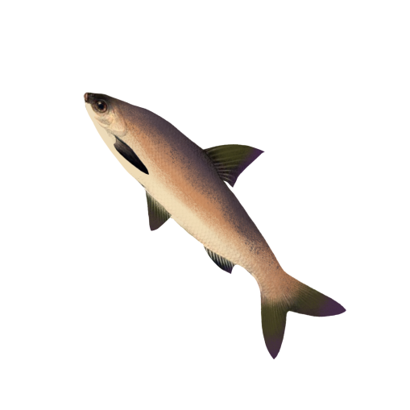
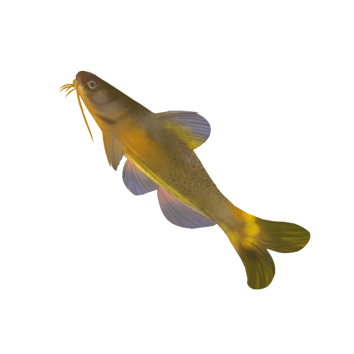
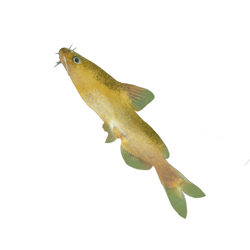
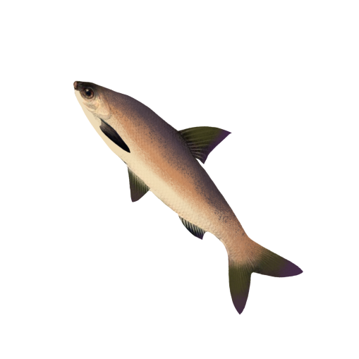
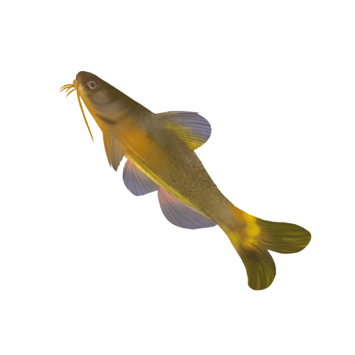
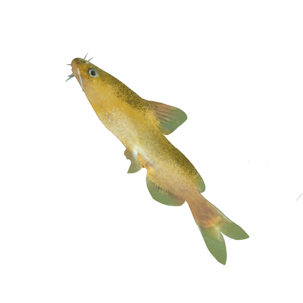
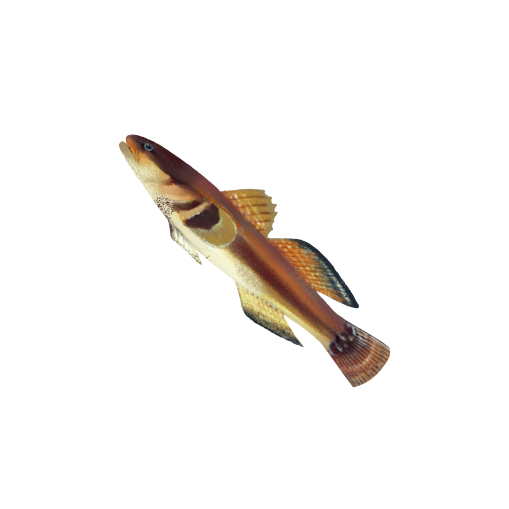
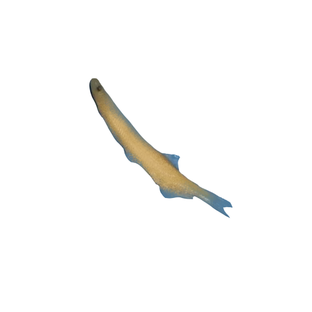
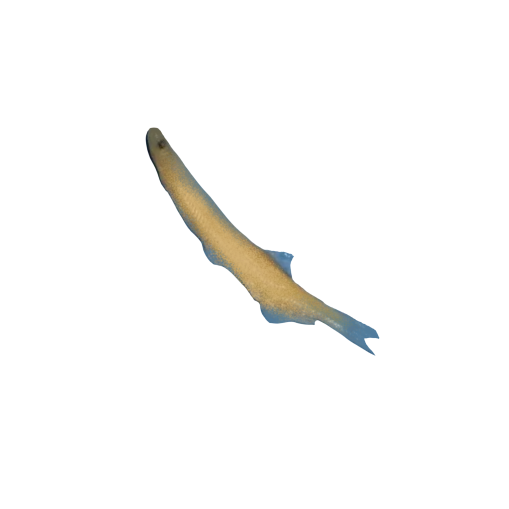

 



Location
Niches affected: Tidal action can cause niches to change over time and space, which can disrupt relationships between Marine organisms. Benthos emerge at low tide and become the lower part of the food chain, submerged when the tide enters, making it difficult to access food.
Reproduction
Tidal changes also have a big impact on the reproduction and growth of Marine life. Certain migratory fish will enter estuaries or bays to breed when the tides change, which is crucial for their reproduction. Tidal changes also promote the growth of microorganisms and plankton, which are important foods in the upper food chain.
Clock
Biological activity is limited in time and space:Tidal changes limit the time and space of organisms, and certain shallow-sea organisms appear when the tide enters and disappear when the tide goes out. The impact on predators and prey is huge, and they have to act in the right time and space.
Oxygen
Transport of nutrients and oxygen: Tidal changes drive a large amount of water, which carries nutrients and oxygen during movement, providing essential nutrients and oxygen for Marine life. At the same time, the water will also carry away waste and harmful substances, maintaining the stability of the Marine ecology.